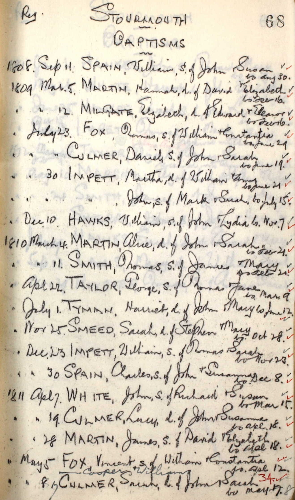
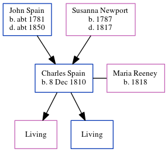

Charles Spain 1810 -
[ Home ] | [ Calendar ] | [ Surnames Index ] | [ Errors ] | [ Family History ]An agricultural labourer and the child of John Spain (a labourer) and Susanna Newport, Charles Spain, the three times great-uncle of Nigel Horne, was born in Stourmouth, Kent, England on 8 Dec 18101, was baptised there at All Saints on 30 Dec 1810 and married Maria Reeney (with whom he had 2 children: Maria and Charles) in Eastry, Kent, England around Nov 18432. On 30 Mar 1851, he was living at East Street in Stourmouth3.
Parents
- John was born c. 1781
- Susanna was born in 1787
Citations
- Kent, Canterbury Archdeaconry Baptisms - Findmypast
- England & Wales Marriages 1837-2005 - Findmypast
- 1851 England, Wales & Scotland Census - Findmypast (was age 40 and the head of the household)
Media
Charles Spain - baptism

1851 UK Census

Canterbury Baptisms Image - GBPRS-CANT-004129312-00602
Kent, Canterbury Archdeaconry baptisms 1538-1912 - GBPRS/CANT/B/96716027
1851 England, Wales & Scotland Census - GBC/1851/0005916977
England & Wales marriages 1837-2008 - BMD/M/1843/4/AZ/000600/058
Family Tree
Map
Generated by ged2site. Last updated on Jul 3, 2024